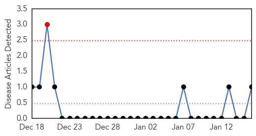
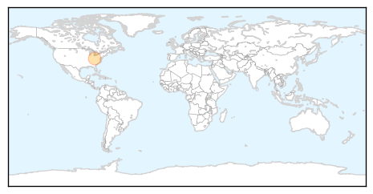
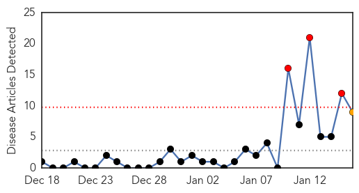
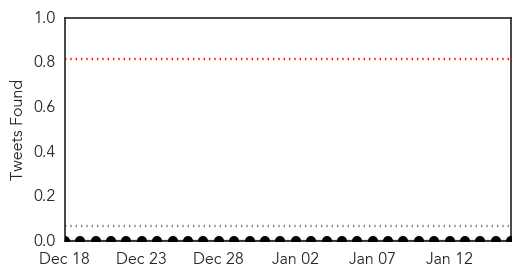
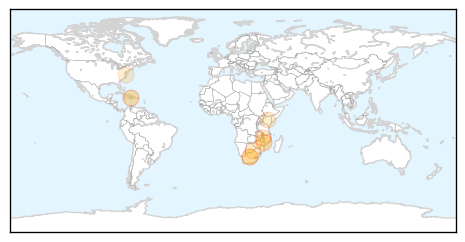
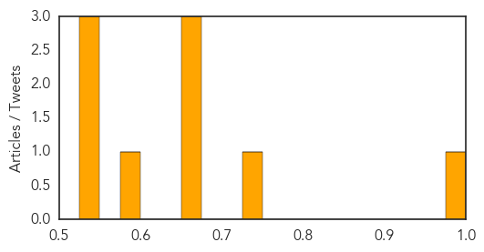

Mumps
30-Day Web Trend
1 alerts, 0 warnings

30-Day Twitter Trend
0 alerts, 0 warnings

Article Locations
Article Confidences

Top Articles:
Top Tweets:
-
No tweets found for Jan 16, 2015
Cholera
30-Day Web Trend
3 alerts, 1 warnings

30-Day Twitter Trend
0 alerts, 0 warnings

Article Locations
Article Confidences
Top Articles:
- 0.999
- Recognizing the Heroes of Haiti's Cholera Crisis
- 0.737
- Thousands of families in urgent need of support as heavy rains sweep across southern Africa
- 0.668
- Thousands of families in urgent need of support as heavy rains sweep across southern Africa - Malawi
- 0.659
- Malawi flooding death toll nears 200, more missing
- 0.658
- Malawi flooding death toll nears 200, more missing
- 0.578
- Malawi's floods spotlight Africa's severe poop problem - but it can also be a game changer
- 0.542
- Ballast Water Treatment Tests draw sharp criticism
- 0.531
- Floods and heavy rains in Malawi - Malawi
- 0.528
- Flooding From Heavy Rain Leaves at Least 176 Dead in Malawi
Top Tweets:
-
No tweets found for Jan 16, 2015